← Índice de los 69 tutes de IDA
Tute 3 · El LOADER de IDA
▶ video afín (mismo autor, en x64dbg): «14 Conociendo IDA» · se conecta con: Herramientas · IDA · Instrucciones · Flujo · Debugger · Números
INTRODUCCIÓN AL REVERSING CON IDA PRO DESDE CERO PARTE 3
EL LOADER
Ya vimos que cuando en IDA abrimos un ejecutable, el mismo se abre en el LOADER que es el analizador estático del mismo.
Iremos analizando sus partes y peculiaridades, mucho de lo que hemos visto hasta ahora se aplican tanto al LOADER como al DEBUGGER, en el caso que no sea así se aclarara.
Obviamente ya el hecho de que en el LOADER no se ejecute absolutamente el programa sino se analice y se cree una database con la información del mismo hace una diferencia significativa con respecto al DEBUGGER.
En el LOADER no hay ventana de REGISTROS, ventana de STACK ni listado de módulos que están cargados en memoria esas son cosas que se ven al correr y debuggear el programa.
Habiendo abierto el CRACKME.EXE que es el ejecutable del crackme de Cruehead si miramos en la lista de procesos de Windows, vemos que no está corriendo ni nunca se ejecuta el mismo si no abrimos voluntariamente el DEBUGGER en IDA.
Esto para ciertos usos como el análisis de malware, exploit etc es muy útil, porque no siempre vamos a poder acceder a alguna función que necesitemos estudiar debuggeando, mientras que en el LOADER podemos analizar cualquiera de las funciones del programa, sepamos cómo se llega a ella o no.
Por supuesto el análisis de las funciones merece que hablemos un poco antes de los registros y las instrucciones, para qué sirve cada uno, porque a pesar de no estar debuggeando y no tener una ventana de los registros con los valores de cada momento, las instrucciones los usan y necesitamos entenderlas para poder saber qué hace un programa.
Ahora para que sirven y que son exactamente los registros?
Bueno el procesador necesita asistentes en su tarea de ejecutar los programas.
Los registros lo ayudan en ello, cuando veamos las instrucciones ASM veremos por ejemplo que no se pueden sumar el contenido de dos posiciones de memoria directamente, el procesador tiene que pasar una de ellas a un registro y luego sumarla con la otra posición de memoria, este es un ejemplo pero por supuesto ciertos registros tienen usos más específicos veamos.
Los registros que se usan en 32 bits son EAX, ECX, EDX, EBX, ESP, EBP, ESI, EDI y EIP (al final del curso habrá una parte dedicada a 64 bits).
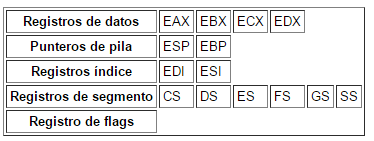
Registros de propósito múltiples EAX (acumulador): El acumulador se utiliza para instrucciones tales como la división, la multiplicación y algunas instrucciones de formato, y como registro de propósito general.
EBX (índice de base): El registro EBX puede direccionar datos de memoria y lógicamente también es un registro de propósito general. ECX (cuenta): El ECX es un registro de propósito general que se puede usar como contador para las distintas instrucciones. También puede contener la dirección de desplazamiento de los datos en memoria. Las instrucciones que usan un contador son las instrucciones de cadena repetidas, las instrucciones de desplazamiento, rotación y LOOP/LOOPD.
EDX (datos): es un registro de propósito general que contiene parte del producto de una multiplicación o parte del dividendo de una división. También puede direccionar datos en memoria. EBP (apuntador de base): EBP apunta hacia una localidad de memoria, casi siempre como base de la localización de argumentos y variables en una función, además de ser también de propósito general.
EDI (índice de destino): A menudo, EDI direcciona datos del destino o destination de las cadenas para las instrucciones de cadena. También funciona como registro de propósito general.
ESI (índice de fuente): El registro del índice fuente o source con frecuencia direcciona datos del origen de las cadenas para las instrucciones de cadena. Al igual que EDI, ESI también funciona como un registro de propósito general.
EIP: Índice que apunta a la siguiente instrucción a ejecutar
ESP: Índice que apunta a la parte superior del stack o pila.
Resumiendo lo que dice este tipo al cual copie.
Los ocho registros son el EAX (acumulador), EBX (base), ECX (contador), EDX (datos), ESP (puntero de pila), EBP (puntero base), ESI (índice fuente) y EDI (índice destino).
También existen los registros de 16 bits y 8 bits, que son partes de los registros anteriores.
Si EAX vale 12345678
AX son las últimas cuatro cifras (16 bits)
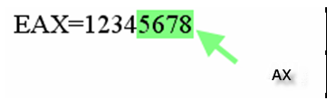
AH la 5 y 6 cifra y a su vez AL las últimas dos cifras (8 bits cada uno)
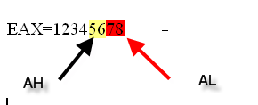
Existe entonces un registro de 16 bits para la parte baja de EAX llamado AX y dos registros de 8 bits llamados AH y AL, no existen registros especiales para la parte alta de cualquier registro.
Existen de la misma forma estos registros también para EBX (BX, BH y BL), para ECX (CX, CH y CL) y así para casi todos los registros (ESP solo tiene SP de 16 bits pero no SL de 8 bits por ejemplo)
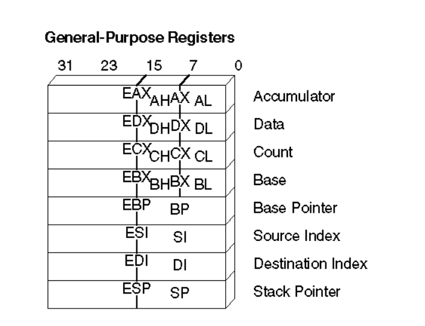
Allí se pueden apreciar los registros como EAX EDX ECX y EBX que si tienen subregistros de 16 y 8 bits y EBP, ESI, EDI y ESP que solo tienen subregistros de 16 bits.
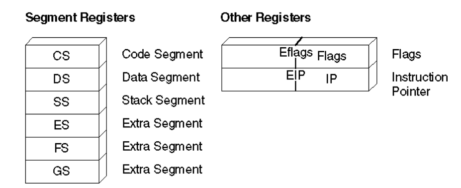
Ya iremos viendo los demás registros solo queda como registro auxiliar importante el EFLAGS que según el valor que tenga enciende flags que tomaran decisiones en ciertos momentos del programa como veremos más adelante, los segments registers direccionan a diferentes partes del ejecutable CS=CODE, DS=DATA etc.
Otro detalle importante son los tamaños de los tipos de datos más usados
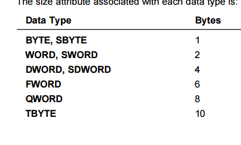
IDA maneja más tipos de datos que iremos viendo poco a poco para no complicar, lo importante es saber de movida que BYTE es un 1 byte en la memoria, WORD son 2 bytes y DWORD 4 bytes.
INSTRUCCIONES
IDA trabaja con una sintaxis de instrucciones que no es la más sencilla del mundo ni mucho menos, la mayoría están acostumbrados al desensamblado del OLLYDBG que es más sencillo y descafeinado (más fácil de entender jeje), aunque da menos información como verán.
Instrucciones de Transferencia de Datos
MOV
MOV dest,src: Copia el contenido del operando fuente (src) en el destino (dest).Operación: dest <- src
Aquí se dan varias posibilidades podemos como primera posibilidad mover el valor de un registro a otro, por ejemplo.
MOV EAX, EDI
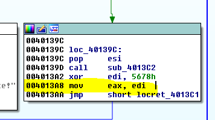
En general se puede mover desde o hacia un registro directamente solo con la salvedad de EIP que no puede ser DESTINATION ni SOURCE de ninguna operación en forma directa, no podríamos hacer
MOV EIP, EAX
Eso no es válido.
Otra opción es mover una constante a un registro como por ejemplo
MOV EAX, 1
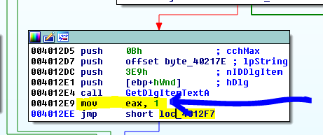
Otra opción es mover el valor de una dirección de memoria no su contenido (estas instrucciones que puse en las imágenes pertenecen a otro ejecutable no al CRACKME.exe no había ejemplos de estas instrucciones en el mismo sino al VEViewer.exe que esta adjunto con este parte 3)
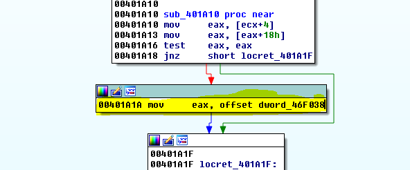
En ese caso cuando el valor que se va a mover es una dirección de memoria, la palabra OFFSET adelante nos indica que debemos usar la dirección, no su contenido.
O sea esto si apreto Q me lo cambia a
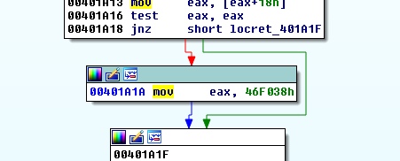
MOV EAX, 46f038
Que es una instrucción mas tipo OLLY pero que no me da ninguna información acerca del contenido de dicha dirección, si hacemos click derecho en la dirección 46f038 podemos volver a la instrucción original.
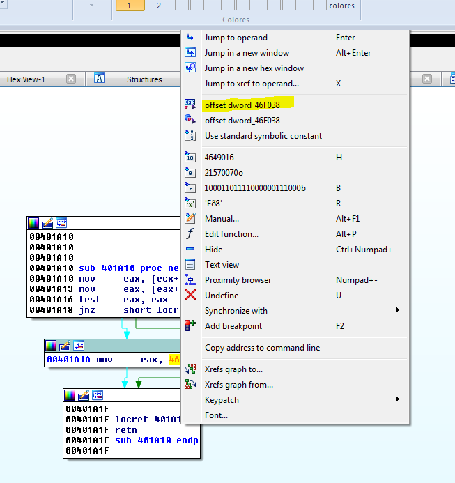
Y quedara como antes
Que me dice esa información extra que me da el IDA sobre dicha dirección de memoria?
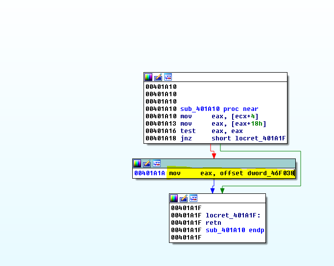
Si abro la ventana HEX DUMP y busco dicha dirección veo que inicialmente hay ceros, podría saber que es un DWORD pero eso realmente no lo sé porque depende de donde usa ese valor el programa, lo que define el tipo de variable.
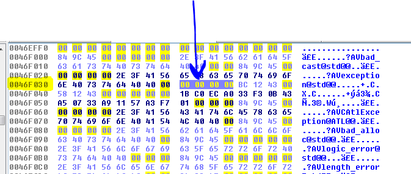
Si vuelvo al listado y hago doble click en la dirección.
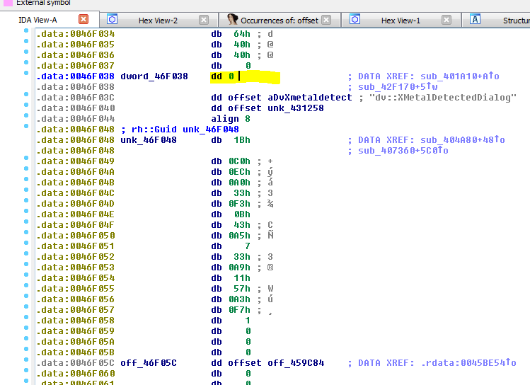
Ahí veré porque el IDA me dice que el contenido de dicha dirección es un DWORD, en el listado desensamblado del IDA cuando vemos zonas de memoria que no son código, como en este caso perteneciente a la sección data, por supuesto la primera columna son las direcciones.
Justo al lado dice dword_46F038 que quiere decir que el contenido de esa dirección es un DWORD es como una aclaración de la dirección que está a la izquierda, luego está el tipo de datos dd que es DWORD y luego el valor que contiene dicha posición de memoria que es cero.
O sea IDA me está diciendo que el programa usa esa dirección para guardar un DWORD y más a la derecha veo la referencia adonde está siendo usado ese DWORD.
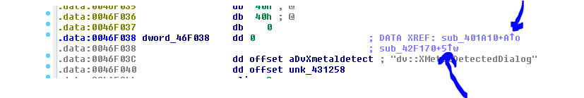
Allí hay dos referencias cada flechita es una y posando el mouse encima puedo ver el código, también si apreto la X encima de la dirección veo desde donde es accedida.
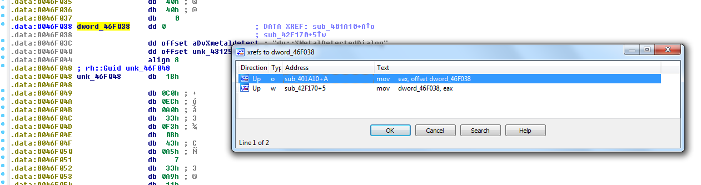
La primera es cuando lee la dirección donde estábamos antes, la segunda escribe un DWORD en el contenido de 0x46F038, por eso el IDA en la primera instrucción nos dijo que esa dirección apuntaba a un DWORD, porque había otra referencia que accedía a ella y allí escribía un dword y así todo cierra.
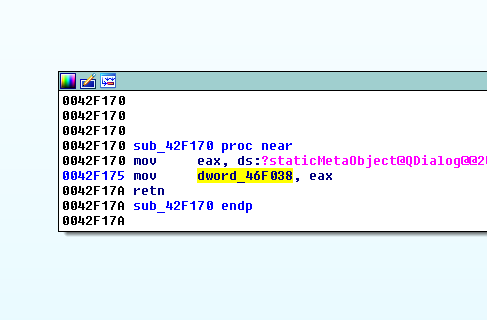
Así que el IDA en la instrucción original no solo me informaba que iba a mover la dirección tal a un registro, sino que me decía que esa dirección contenía un DWORD, lo cual es un plus.
Así que ahí vemos que cuando se trata de direcciones numéricas, IDA marca la misma como OFFSET y cuando vamos a buscar el contenido de la misma, como en este caso sería el cero, no usa corchetes si es una dirección numérica.
Como vimos
mov eax, offset dword_46F908
Mueve la dirección 0x46F908 a EAX
mov eax, dword_46F908
Mueve el contenido o el valor que se halla en dicha dirección
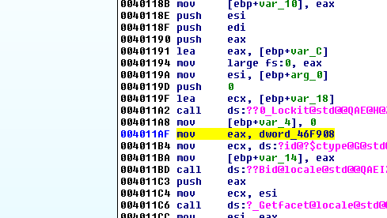
Esta instrucción se vería en el OLLY con corchetes para los que están acostumbrados al uso del mismo.
MOV EAX,DWORD PTR DS:[46f908]
O sea que cuando una dirección tiene la palabra OFFSET completa delante, se refiere al valor numérico de la dirección en sí, y cuando no lo tiene se refiere al contenido de dicha dirección.
Esto solo ocurre cuando nos referimos a direcciones numéricas, si trabajamos con registros solamente.
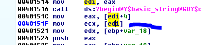
Ahí si usa corchetes porque obviamente no sabe estáticamente que valor puede tener el registro en ese momento, y no puede saber a qué dirección apuntara para sacar algo más de información de allí.
Por supuesto en este caso si EDI apunta a por ejemplo 0x10000 dicha instrucción buscara el contenido en dicha dirección de memoria y lo copiara en ECX.
Así que es vital entender que cuando IDA usa la palabra OFFSET completa delante de una dirección, se refiera al valor numérico de la misma dirección y no a su contenido hagamos un ejemplo más.
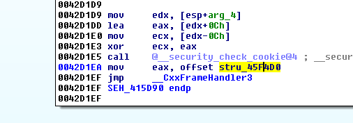
Allí vemos que mueve a EAX el valor 0x45f4d0 ya que esta la palabra OFFSET completa delante y me aclara que dicha dirección contiene una stru_ o sea una estructura.
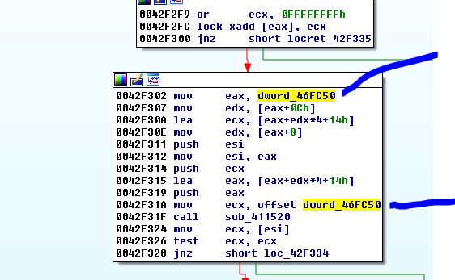
En este otro caso, en la primera instrucción marcada mueve el contenido de 0x46fc50 que es un DWORD y en la de abajo mueve la dirección en si o sea el número 0x46FC50.
Podemos ver qué valor contiene dicha dirección para ver que moverá en 0x42f302, si hago click en 0x46fc50 veamos que hay allí.
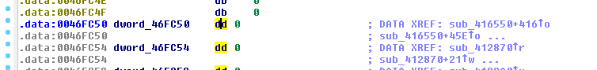
Vemos que moverá un cero, si es que no se ejecutó alguna otra instrucción que guarde algún valor allí y lo modifique, como nos muestra las referencias.
Allí vemos al ver las referencias con X, que en esa instrucción guarda un DWORD
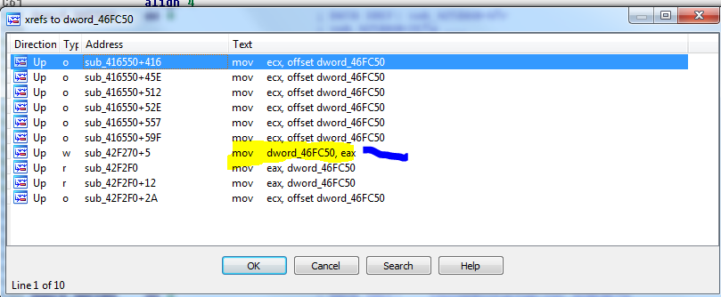
Justo en esa instrucción que está marcada en amarillo guarda un DWORD en dicha dirección de memoria, todos los otros o bien leen la dirección con offset o bien leen el valor como las que no tienen la palabra offset.
Por supuesto se pueden mover también contantes a los registros de 16 bits y 8 bits que vimos antes.
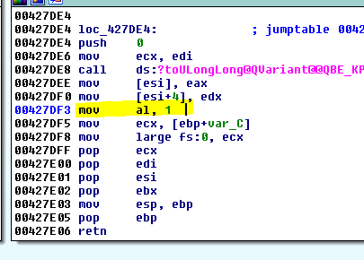
Mueve a AL el valor 1 dejando el resto de EAX con el valor que tenía antes solo cambia el byte más bajo.
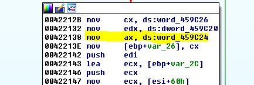
Allí mueve a AX, el contenido de la dirección de memoria 0x459c24 que nos dice que es un WORD.
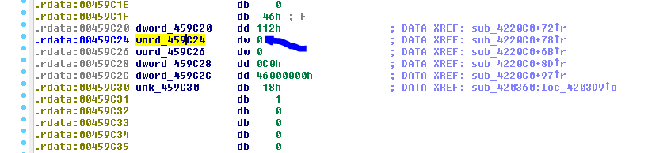
Y vemos que inicialmente es un cero, quizás más adelante al correr el programa se modifique.
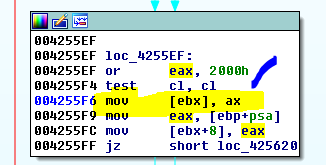
Allí mueve AX al contenido de EBX que como es un registro y no sabe cuánto valdrá en ese momento, no puede aclarar más y usa corchete para indicar que escribe en el contenido de EBX.
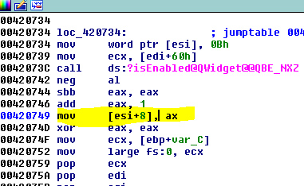
Allí igualmente escribirá en el contenido de ESI+8 el valor de AX.
Otro ejemplo
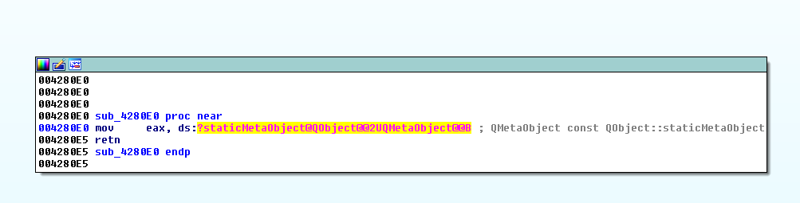
Si hago click en el nombre feo me lleva a
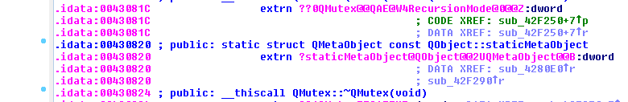
Sabemos que la IAT o sea la tabla que guarda cuando arranca el ejecutable, las direcciones de las funciones importadas está casi siempre en la sección idata.
Si voy a ver a la vista HEX DUMP esa dirección todavía no tiene el valor de la función ya que se rellena la IAT cuando arranca y el proceso no arranco.
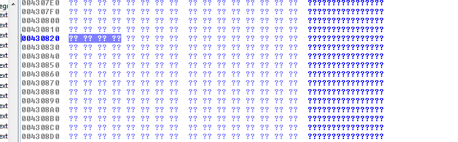
Si voy a OPTIONS-DEMANGLE NAMES y pongo la tilde en NAMES se ve un poco mejor.
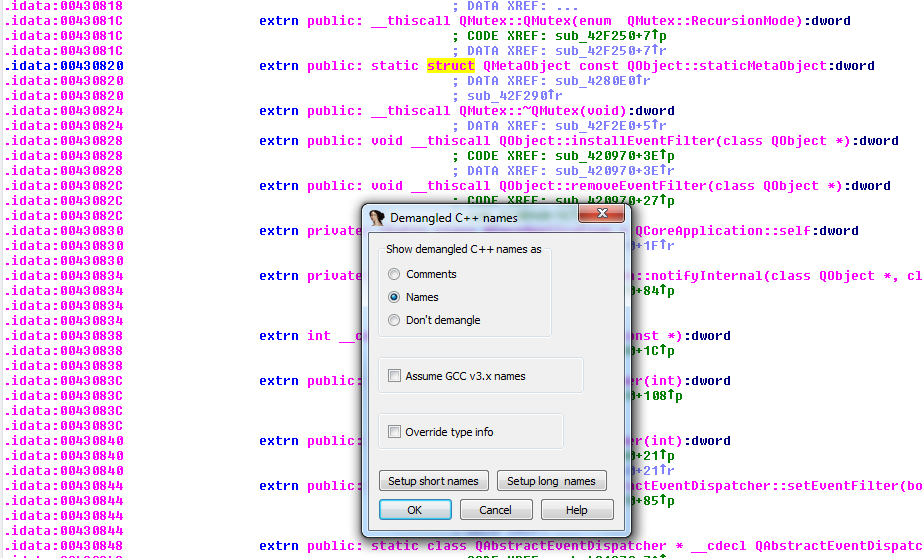
El prefijo extrn se refiere a que es una función importada EXTERNA a este ejecutable.
Si subimos vemos que nos dice que son funciones importadas de la DVCORE.dll y más arriba hay más funciones de otras dll.
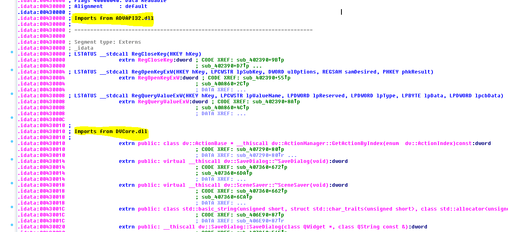
Bueno hemos visto diferentes ejemplos de MOV que pueden practicar y mirar en el IDA con el ejecutable que adjunte.
En la parte 4 seguiremos con más instrucciones.
Bye
Ricardo Narvaja